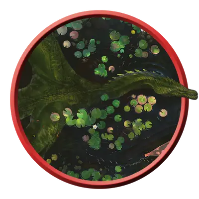

Взрослый зелёный дракон
Adult Green Dragon
Огромный Дракон (Цветной), Принципиальный Злой

Класс Защиты 19 Инициатива +11 (21)
Хиты 207 (18к12 + 90)
Скорость 40 футов, Плавания 40 футов, Полёта 80 футов
| мод | спас | ||
|---|---|---|---|
| СИЛ | 23 | +6 | +6 |
| ЛОВ | 12 | +1 | +6 |
| ТЕЛ | 21 | +5 | +5 |
| мод | спас | ||
|---|---|---|---|
| ИНТ | 18 | +4 | +4 |
| МДР | 15 | +2 | +7 |
| ХАР | 18 | +4 | +4 |
Иммунитеты Яд; Отравленный
Чувства Тёмное зрение 120 футов, пассивное Восприятие 22, Слепое зрение 60 футов
Языки Общий, Драконий
Опасность 15 (13 000 опыта или 15 000 опыта в Логове; БВ +5)
Особенности
Амфибия. Взрослый зеленый дракон может дышать как воздухом, так и под водой.
Легендарное сопротивление (3/день, или 4/день в Логове). Если дракон проваливает спасбросок, он вместо этого может в нём преуспеть.
Действия
Мультиатака. Дракон совершает три атаки Раздиранием. Он может заменить одну из этих атак использованием Сотворения заклинаний (Пронзание разума (версия 3-й круг)).
Раздирание. Бросок рукопашной атаки: +11, досягаемость 10 фт. Попадание: 15 (2к8 + 6) Рубящего урона плюс 7 (2к6) урона Ядом.
Ядовитое дыхание (Перезарядка 5–6). Спасбросок Телосложения: Сл 18, каждое существо в 60-футовом Конусе. Провал: 56 (16к6) урона Ядом. Успех: Только половина урона.
Сотворение заклинаний. Дракон сотворяет одно из следующих заклинаний, не нуждаясь в Материальных компонентах (заклинательная характеристика — Харизма, Сл спасброска заклинаний 17):
Неограниченно: Обнаружение магии, Пронзание разума, версия 3-го уровня
1/день: Гейс
Легендарные действия
У этого существа есть 3 использования Легендарных действий (или 4 использования в его Логове); оно может немедленно после окончания хода другого существа потратить одно использование, чтобы совершить одно из следующих действий. Существо восполняет все потраченные использования в начале каждого своего хода.
Вторжение в разум. Дракон использует Сотворение заклинаний (Пронзание разума (версия 3-го уровня)).
Токсичные миазмы. Спасбросок Телосложения: Сл 17, каждое существо в 20-футовой Сфере с центром в видимой драконом точке в 90 футах. Провал: 7 (2к6) урона Ядом, и цель получает штраф –2 к КЗ до конца своего следующего хода. Провал или успех: Дракон не может совершить это действие повторно до начала своего следующего хода.
Наскок. Дракон перемещается на расстояние вплоть до половины своей Скорости и совершает одну атаку Раздиранием.
Бонус мастерства +5
Среда обитания Леса
Сокровища Магические
Зелёные драконы
Драконы хитрости и издёвок
Из глубин запретных лесов зелёные драконы нашёптывают миру зло и манипулируют жизнями тех, кто внемлет им. Эти неуловимые, коварные и эгоистичные цветные драконы терпеливо охотятся за страхами недолговечных существ, развращают и изолируют их. Они могут столетиями скрываться в лабиринтах дикой чащи и избегать других существ. Даже самые преданные последователи могут слышать их голосом в лесу или шёпотом во снах.
Несмотря на свою мощь, большинство зелёных драконов презирают физическое насилие, оставляя сражение своим слугам, и предпочитают заманивать врагов в опасные или выгодные для себя ситуации с помощью хитрости и обмана.
Они собирают «побрякушки», которые служат предметами для вымогательства, например компрометирующие документы, семейные реликвии и важные для других сокровища. С помощью них зелёные драконы создают свои манипулятивные сети.
Слова взрослых зелёных драконов столь же смертоносны, как и их ядовитое дыхание. Они блестящие интриганы, которые гордятся своим влиянием на поселения рядом с их логовами. Они одержимы сбором информации и создают обширные шпионские сети. Многие из этих драконов ищут магические средства для наблюдения или подчинения и пытаются манипулировать искателями приключений. Они заставляют их охотиться за утраченной магией, которая поможет им достичь своих целей.
Логова зелёных драконов
Зелёные драконы устраивают свои логова в древних лесах, полых стволах и пещерах среди могучих корней. Они часто огораживают свою территорию переплетением стволов и ветвей вековых деревьев. Также эти драконы часто устраиваются среди заросших лесами развалин, особенно в покинутых домах завоёванных ими существ.
Местность, в которой находится логово взрослого или древнего зелёного дракона, изменяется из-за его присутствия, что создаёт следующие эффекты:
• Животные-шпионы. Животные Маленького размера магическим образом получают способность понимать Драконий и могут общаться с драконом телепатически, пока находятся в пределах 1 мили от логова.
• Ядовитая чаща. Обычные растения в пределах 1 мили от логова отравляют воздух вокруг себя. Каждый раз, когда существо, кроме самого дракона и его союзников, завершает Долгий отдых в этой области, оно должно совершить спасбросок Телосложения Сл 15; при провале оно Отравлено на 1 час.
Если дракон умирает или перемещает своё логово в другое место, все эти эффекты мгновенно исчезают.